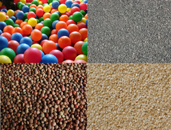

| Research |
|
|
| Granular physics | |
| A granular material is a system of discrete solid, macroscopic particles characterized by a loss of energy whenever the particles interact. Some examples of granular materials are snow, nuts, coal, sand, rice, coffee, corn flakes, fertilizer, and bearing balls. Granular materials are commercially important in applications as diverse as pharmaceutical industry, agriculture, and energy production. |  flakes |